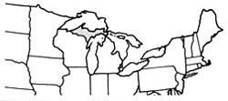
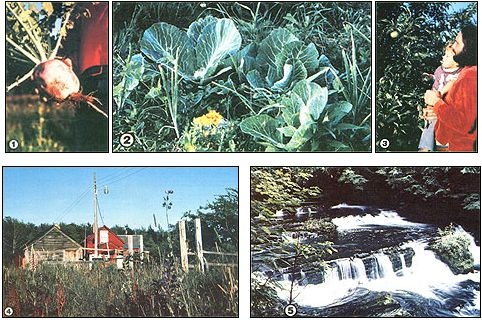
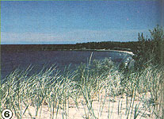

We left the garbage, the crime, and the "boom boxes" of the inner city and set out to try . . .
During the last year that Francie and I lived in Grand Rapids, a mother was murdered in front of her children . . . a house was torched with someone still inside (who, fortunately, escaped from the fire) . . . and a large rock came crashing out of nowhere through our picture window: all ominous signs that reinforced our determination not to spend another year in the ghetto!
ESCAPE
Our initial plan was to leave Grand Rapids, in the fall of 1981, with our urban homestead housemates. We were, you see, going to combine savings so we could afford to buy land together. But at the last minute our friends had to back out, and we were left without enough money of our own to swing a farm purchase. I'll tell you, the thought of spending another dreary slum winter was almost more than we could stand.
Francie and I probably would have stayed on, though (and hated every minute of it), if it hadn't been for a young farmer we met at a nearby outdoor market. "As far as I can see," he said, "the only way to get to the country is to go there." And come December - when we couldn't bear our city existence any longer - that's exactly what we did! We loaded everything we owned into the back of our old pickup . . . put our two-year-old son Aaron and our faithful Alaskan malamutes between us on the seat . . . propped the road atlas on the dash . . . and headed north to the Upper Peninsula.
We hoped to settle in the U.P. because we'd camped there many times and had become quite enamored of its unspoiled countryside. Furthermore, land in the rugged region is still inexpensive. For example, real estate listings I noticed in 1982 included a three-bedroom home on 39 acres - with drilled well, barn, and sauna - for $9,250, a 120-acre spread at $160 an acre, and property as low as $100 an acre in some places! Of course, prime farmland or plots with lake frontage can command higher prices . . . but compared with most parts of the U.S., land in the U.P. is a real bargain.
TRAVELS AND TROUBLES
We were only about half a day out of Grand Rapids when it started to snow . . . which was enough to slow us down a bit, but not to dampen our adventurous spirits. Luckily, we reached Houghton/Hancock (twin "cities" - with a combined population of about 14,000 - on the Keweenaw Peninsula) without mishap, and located a little farm, just a quarter-mile from the Lake Superior shore, that was available for rent at only $140 a month. We snapped it up, of course, and had barely unloaded the truck when the snow began to fall in earnest. (It piled up more than a foot overnight!)
As you can imagine - although at least we had a roof over our heads - adjusting to our new home wasn't all that easy. We were in the north country for the first real snows of winter . . . it was almost Christmastime . . . and we hadn't the slightest idea what we were going to do next or how we'd make a living. Believe me, that first holiday season was pretty tough: gathering wet wood (which was all we could find) every day to put in our woodstove . . . driving the 15 miles into town through a blizzard to call our folks from a phone booth on Christmas morning . . . and, in general, struggling to get to know our new home in the face of downright harsh winter conditions.
Gradually, though, things began to go our way. Neighbors dropped by with loads of dry wood and cold-cellared root crops . . . we joined a local co-op . . . and both of us managed to find work that at least paid well enough to keep us from overdosing on lentil soup and boiled dinners.
Best of all, we discovered that we weren't alone. In fact, a lot of young people have come to the U.P., moved by an honest appreciation of nature and the willingness to take any kind of job in order to be able to stay here.
GETTING BY AND GETTING. BETTER
And what exactly do such folks do? Well, our friends Dennis and Janet (for instance) are both substitute teachers . . . and Dennis also sells drawings and photographs at local markets, while Janet peddles her craft items. Jay, another new acquaintance, has a degree in forestry . . . but he's currently washing dishes to make ends meet while he gets started in his own firewood business. And our neighbors - Jerry and Christiane and their four youngsters - have started a log home operation.
Then there's Bill, who has worked part time at the Keweenaw Coop for several years. He spends his winters as a tax accountant in California to help subsidize his summers up here in "Superior country". Bob and Becky, on the other hand, put in a couple of months each winter planting trees "down south" in lower Michigan . . . and then return to Bob's grandmother's blueberry farm for the rest of the year to help out with the crop.
Although Francie and I have yet to find our niche, one thing's for sure: Our lifestyle here is far more healthful than our previous one. It's helped clear up my stress-caused stomach condition and put color in our cheeks. We're quite willing to accept the fact that we have to change our career goals somewhat in order to live in an environment that can only help to promote our physical, mental, and emotional well-being.
Despite our "progress", though, you can bet we did a lot of soulsearching that first cold winter . . . especially during the many snowbound weeks that passed without our seeing another person. But spring finally came, and at last we were able to see what the territory we'd settled in actually looks like without a blanket of snow to mask it.
And what a spectacular sight it is! There are "mountains" (of up to 2,000 feet), trees everywhere. . . and, of course, Lake Superior! The world's largest inland "sea" is an amazing expanse of fresh water that measures some 31,800 square miles and has depths as great as 1,333 feet! The lake and its winds keep us all on our toes weatherwise, but Superior also dazzles us with exquisite sunrises across its surface and a generous scattering of agates along its beaches.
SOME FACTS AND FIGURES
The U.P. has a land area of well over 16,000 square miles (around 90% of it is forested) and 1,700 miles of shoreline . . . offers 17 state parks and two national forests . . . and boasts 4,000 inland lakes and some 12,000 miles of streams. No mention of the wilderness up here would be complete without a word about fishing: In good weather, anglers come from all over just to try out our trout-filled waterways. And the deep, dry snow during our cold months is perfect for winter sports.
Stoplights and superhighways are definitely not common in these parts . . . but then neither are "boom boxes" (those obnoxiously loud tape decks that seem to walk themselves down city streets) or armed robberies! Job potential is best in either the forestry industry or the tourist-service businesses. (Many of the once prominent copper mines have been shut down as a result of the depressed economy, and that fact is unfortunately adding to the already prevalent unemployment problem here.)
Because of the elements, slow development, and the job market, the U. P.'s population has actually decreased slightly over the last few decades. As you'd likely imagine, then, homesteading in this rugged part of the country is clearly not for everyone . . . and Francie and I certainly had our problems, the main one being simply finding work. In fact, we may yet decide to leave our little farm and move to Marquette (a city of 24,000), where there's a job waiting for me. If so - although we'd be sad to leave the Keweenaw Peninsula - we'd look forward to exploring another part of the U.P. (and perhaps to becoming more financially secure in the process).
HOME IS WHERE THE HEART IS
There are, of course, a few other thorns in our paradise. Francie, for instance, would like to become a midwife, and is frustrated by the fact that the training she needs isn't readily available here. But even if we choose to shift bases (by moving south) for a while so that she can acquire such experience, we finally know where our home and our hearts really are.
How could we not have come to love this place, when every day we watch Aaron bolt out the back door (regardless of the weather), grinning from ear to ear in sheer pleasure at having almost unlimited roamable space at his disposal? The sight of him leaping in and out of the tall grass, and the sound of his giggles when he trips, are more than enough to prove to us that we did the right thing by leaving the inner city to make the U.P. our home.
|
 Photos by Chuck Makela [1] Root crops thrive in the cool climate here . . . [2] but the deer made short work of our cabbage! [3] Aaron loves fresh apples [4] Out U.P. home. [5] the Falls River |
 [6] Lake Superior seen from the west side of the Keweenaw Peninsula. |
 |